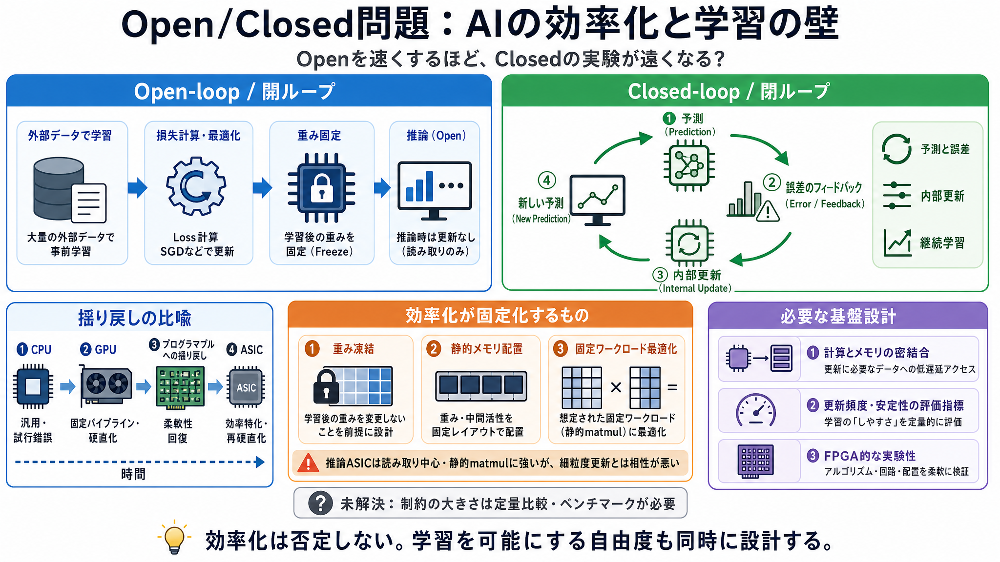

Publications - Advent Lab
#### [C13] Evaluating Computing Platforms for Sustainability: A Comparative Analysis of FPGAs against ASICs, GPUs, and C…

「速くする」ほど、AIの学習が“外部前提（open-loop）”に固定され、自己更新（closed-loop）を試しにくくなる——という問題提起。
日本語補助：open-loop / 閉ループの対比で読む。
MLsysで目立つ「学習/推論/展開の効率化」が、技術進歩ではなく“開ループ前提”を強める方向に作用しうる。
主張（筆者の見方）
効率化は中立ではなく、学習パラダイムを“実験困難”な形で固定する。
問い（読者の論点）
それは“絶対不可能”ではないが、どの程度コストを押し上げるのか？
歴史的に、汎用CPU的な環境では試行錯誤が多様になり、固定パイプラインGPUでは硬直化し、やがてプログラマブル性が戻る——その後にASICで再硬直化。
段階 i
汎用性（CPU）
段階 ii
固定パイプライン（GPU）
段階 iii
推論ASIC（効率特化）
主流LLMは、学習時に外部データを与え、損失関数と最適化（SGD等）で更新し、その後は重みが固定され推論に使われる。
学習（外部）
data → loss → SGD/更新
推論（内部固定）
weights frozen → inference
open-loopは外部で学習し、closed-loopはモデル自身が予測と誤差を受けて内部を更新し続ける。
Open-loop / 開ループ
外部で学習（データ収集・損失・最適化）→ 重み固定 → 推論
Closed-loop / 閉ループ
予測と誤差のフィードバックが内部更新を駆動し、継続学習する
推論特化ASICは、重み凍結・読取中心のメモリ配置・静的なバッチ行列積（matmul）最適化を得意とし、細粒度な継続更新と相性が悪い。
i 凍結前提
weights frozen（更新しない）
ii メモリ分離
メモリ配置が静的寄り
iii 静的計算
matmul最適化（固定ワークロード）
エージェントがDBやファイル等をツール呼び出しで更新しても、LLM本体の重みが更新されなければclosed-loop learningとは別物。
見かけの学習
外部メモリ（DB/ファイル）を更新して“知識”が増える
本質の閉ループ
モデル内部が予測と誤差に応じて更新し続ける
閉ループ学習を試すには、更新の微細さを前提に、メモリと計算をより密に結び、自己更新できる実験基盤が要るが、現場の時間配分は開ループ高速化に偏りがち。
筆者の要件
重みの微細更新／継続学習を支える計算・メモリ統合
現状の偏り
既存方式の“より高速化”に投資が集まり、閉ループ基盤が後回し
主張を分解すると「効率化＝中立でない」「開/閉の定義」「ASICの前提」「基盤不足」の連鎖になる。
i 効率化の非中立
カーネル最適化や推論ASICが“開前提”を固定化しうる。
ii 対比が中心
LLMは通常open-loopで、モデル本体は推論後に更新しない。
iii 推論ASICの物理
重み凍結・静的計算が、学習更新に必要な自由度を減らす。
iv 基盤不足
closed-loopを試す基盤が整わず、研究投資の配分が偏る可能性。
本稿は強い因果を示唆する一方、(1) 現行ハード上で閉ループがどこまで可能か、(2) ASICが障害になる程度、(3) substrateの現実的性能が不明。
必要な比較（例）
既存のオンライン学習・継続学習・自己更新が、どれだけ実装されているか。
必要なベンチ
推論ASICがそれらに与える制約を、定量（性能・安定性・コスト）で比較。
次世代の学習パラダイムには、探索（実験）のための基盤が必要。重要なのは「効率化」ではなく「学習を可能にする自由度」を同時に設計する視点。
技術・戦略
ハードウェア思想が“最適化すべきもの”を長期固定する。
科学・評価
更新頻度・安定性・書換・学習ダイナミクスを測る必要。
リスク
技術ロックインで自己更新能力の実現が遅れる可能性。
現在の主流は外部訓練（open-loop）で、推論特化ASICは重み凍結・静的計算に最適化されがち。だから“閉ループ学習の実験基盤”が遅れると、可能性は狭まる。
次に問うべきこと
現行方式で閉ループはどこまで可能か？ASICの制約はどれほどか？
研究への含意
substrate（基板）と評価指標を先に作り、学習パラダイムを検証できる状態を整える。
#### [C13] Evaluating Computing Platforms for Sustainability: A Comparative Analysis of FPGAs against ASICs, GPUs, and C…
Home>The blog>integrated circuit>FPGA vs ASIC: Comprehensive Comparison Guide. # FPGA vs ASIC: Comprehensive Comparison …
These chips are optimized for **low latency**, **power efficiency**, and **form factor**, making them ideal for **edge i…
# ASIC vs FPGA: What Engineers Need to Know. ASICs and FPGAs are both essential parts of modern hardware design – but it…
As AI applications demand more speed, memory, and energy efficiency, the choice of hardware becomes critical. For entrep…